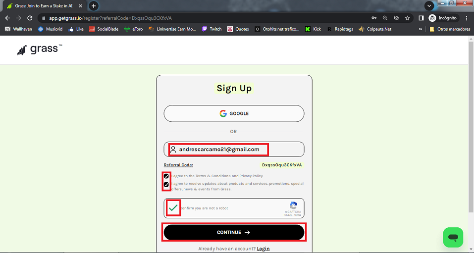
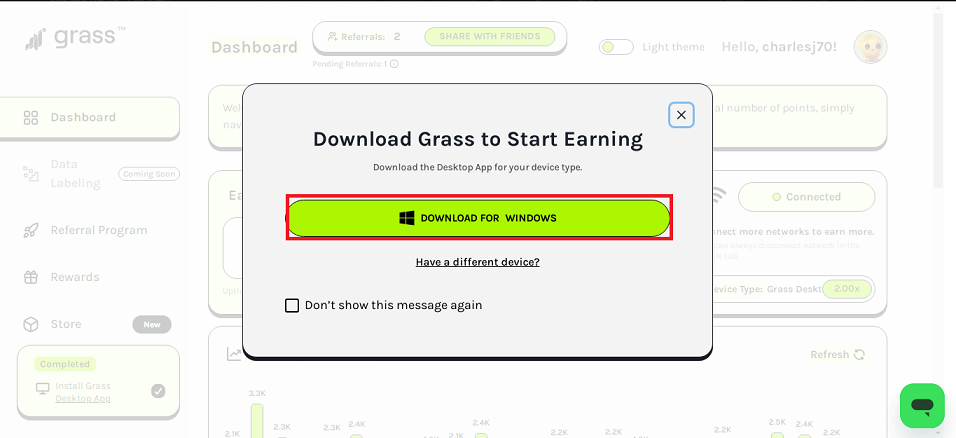
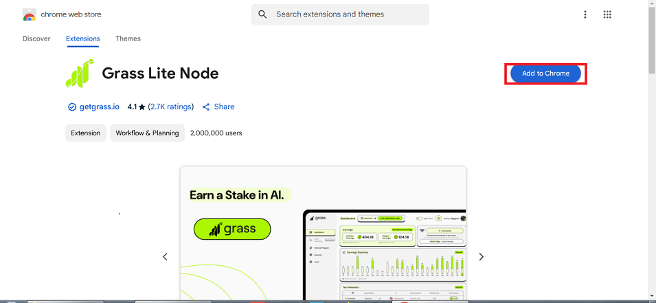

¿Cómo hacer dinero $$ online? - Método fácil
Primero, vamos a hablar de Grass.

GRASS Cripto es una criptomoneda que permite a los usuarios compartir su ancho de banda de internet no utilizado a cambio de recompensas.
También es una red descentralizada que apoya el desarrollo de inteligencia artificial.
Cómo funciona?
Los usuarios comparten su ancho de banda con empresas que lo necesitan para servicios digitales.
Las empresas pagan por el ancho de banda para tareas como verificar precios, ofrecer anuncios, y realizar investigaciones.
Grass recopila y estructura datos web públicos para entrenar modelos de IA.
Pasos a seguir:
1: Entrar al link y crearnos una cuenta con nuestro correo.
app.getgrass.io/register
Ponemos nuestro correo, aceptamos los terminos y condiciones dando click a las casillas, hacemos también el capcha. luego click en Continuar.

2:Descargar la aplicacion de escritorio.
Damos click al botón verde de Download for windous e instalamos la aplicación.

3:Descargar el nodo.
Damos click a Store y en "otras opciones" al ícono de google chrome

4:Añadir/descargar la extensión.
Damos click al botón azul de "add to crhome" y esperar a que se descargue la extension

5:Abrir nuestra cuenta en la extensión
Damos click al botón verde de "login" e insertamos la cuenta que creamos en el paso 1

6:Activar el nodo para empezar a minar
Damos click al botón verde de "conectar", una vez hecho esto, ya comenzaremos a ganar puntos en automático

7:último paso: verificar nuestra cuenta y billetera.
En éstas tres casillas nos pide verificar el correo con el que creamos la cuenta. debemos darle click a cada una de las casillas y seguir los pasos. con ésto enlazaremos la cuenta de grass con nuestra billetera a la cual nos legará nuestro dinero.